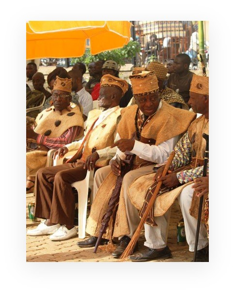
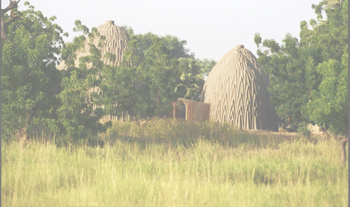
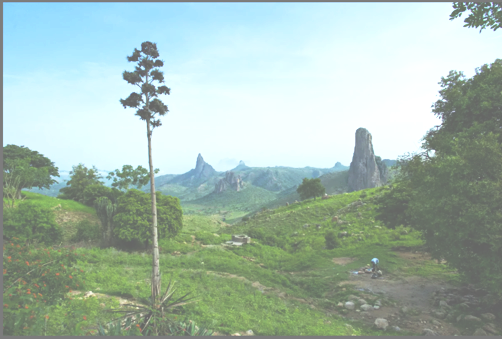
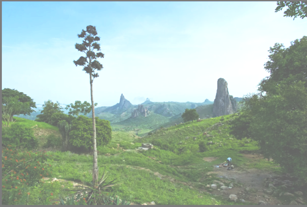
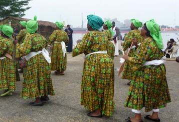

Cameroon History
Overview
Cameroon has a rich history that dates back thousands of years, with early civilizations like the Sao thriving near Lake Chad and numerous ethnic groups forming kingdoms and chiefdoms such as the Bamoun in the west and Fulani emirates in the north. European contact began with Portuguese explorers in the 15th century, but it wasn't until 1884 that Germany formally colonized the territory as Kamerun. After Germany's defeat in World War I, the land was divided between France and Britain under League of Nations mandates. French Cameroon gained independence in 1960, followed by the unification with Southern British Cameroons in 1961, forming the Federal Republic of Cameroon. The federation was abolished in 1972, creating a unitary state. Since 1982, Paul Biya has ruled the country, overseeing a shift to multi-party politics in the 1990s, though his long tenure has been marked by allegations of authoritarianism. In recent years, Cameroon has faced major challenges, particularly the Anglophone Crisis, where English-speaking regions have demanded greater autonomy or independence due to perceived marginalization. Despite these issues, Cameroon remains a culturally rich and strategically important country in Central Africa, with over 250 ethnic groups and both French and English as official languages.
The Origine of The Name Cameroon
The name Cameroon originates from the Portuguese word "Camarões," which means "shrimps" or "prawns."
When Portuguese explorers arrived on the coast of present-day Cameroon in the 15th century,
they sailed up the Wouri River (near present-day Douala). There, they encountered an abundance of giant
freshwater shrimp.
In 1472, the Portuguese navigator Fernão do Pó (also known as Fernão do Poo) named the river "Rio dos
Camarões" , meaning "River of Shrimps."
Over time, this name evolved through different languages:
- The Spanish called it “Camarones”
- The Germans later adopted “Kamerun” during their colonization
- The French used “Cameroun”
- The English version became “Cameroon”
Before Colonization
Before colonization, the territory now known as Cameroon was home to a wide range of ethnic groups, kingdoms, and civilizations, each with its own unique culture, language, and political systems. One of the earliest known civilizations was the Sao culture, which thrived around Lake Chad from about the 6th to the 15th century, leaving behind impressive artifacts and architecture. In the north, powerful Islamic states such as the Kanem-Bornu Empire and later the Adamawa Emirate (established by the Fulani during the 19th-century jihads) dominated trade and politics, spreading Islam and maintaining vast networks across West and Central Africa.
In the west and central highlands, ethnic groups like the Bamileke, Bamoun, and Tikar developed centralized kingdoms with complex social hierarchies, strong military structures, and vibrant artistic traditions. The Bamoun Kingdom, for example, was known for its skilled diplomacy, military strength, and unique script created by Sultan Njoya in the early 20th century.
Along the coast, the Duala people established themselves as key middlemen in trade between the interior and European merchants. By the 15th century, Portuguese explorers arrived, followed by the Dutch, British, and French, trading goods such as ivory, palm oil, and later slaves. Despite growing European contact, local rulers maintained political control for centuries, adapting to and influencing external relationships.
Cameroon's pre-colonial period was thus marked by diversity, trade, migration, and cultural development, laying the foundations for the complex society that would later experience European colonization in the late 19th century.
During Colonization (1884-1960)
Cameroon's colonial period began in 1884 when Germany signed treaties with local chiefs along the coast, officially establishing the colony of Kamerun. The Germans expanded their control inland, developing infrastructure such as roads, railways, and plantations, especially for cocoa, bananas, and rubber. However, their rule was harsh—marked by forced labor, land seizures, and violent suppression of resistance, including uprisings by the Bassa, Bakoko, and Ewondo peoples.
After Germany's defeat in World War I, its colonies were divided among the victorious powers. In 1919, Kamerun was split into two parts: French Cameroon, which took the majority of the territory, and British Cameroon, which was administered in two parts (Northern and Southern Cameroons) alongside Nigeria. This division was formalized under League of Nations mandates, later becoming United Nations Trust Territories after World War II.
French Cameroon was governed as part of France's assimilationist colonial system, with tighter control and centralized administration. British Cameroons, in contrast, were ruled indirectly through Nigerian colonial structures, receiving less investment in development. During this time, nationalist movements began to grow. In French Cameroon, the Union des Populations du Cameroun (UPC), founded in 1948, called for independence and reunification of the divided territories, but it was banned in 1955, leading to an armed uprising that was brutally suppressed.
By the late 1950s, under increasing pressure from nationalist groups and the global push for decolonization, France agreed to grant independence. French Cameroon became independent on January 1, 1960, with Ahmadou Ahidjo as its first president. In 1961, Southern British Cameroons voted in a UN-organized plebiscite to join the newly independent Cameroon, marking the beginning of reunification.
Independence and Early Years(1960-1972)
Cameroon gained independence from France on January 1, 1960, becoming the Republic of Cameroon with Ahmadou Ahidjo as its first president. Ahidjo focused on building national unity, economic development, and centralizing power. On October 1, 1961, following a UN-organized plebiscite, the British-administered Southern Cameroons voted to join the Republic of Cameroon, while Northern Cameroons chose to join Nigeria. This led to the creation of the Federal Republic of Cameroon, consisting of East Cameroon (Francophone) and West Cameroon (Anglophone), each with a degree of autonomy.
Craetion of Unitary State (1972)
In 1972, a national referendum abolished the federal system, and Cameroon became a unitary state known as the United Republic of Cameroon. This change was intended to promote unity but also reduced the autonomy of the Anglophone regions, planting seeds of future discontent. Ahidjo continued to rule with a centralized and authoritarian style, maintaining stability but limiting political freedoms.
Transition of Power and Biya's Rise (1982-1900)
In 1982, President Ahidjo unexpectedly resigned and handed power to his Prime Minister, Paul Biya. Though the transition was peaceful, tensions later grew between Ahidjo and Biya. Biya faced early challenges, including a failed coup attempt in 1984. That same year, the country was renamed the Republic of Cameroon, and the name of the state returned to its pre-1961 form, further alienating many in the Anglophone regions.
Multi-Party Politics and Political Tensions (1990s-2000s)
Mounting pressure from the public and the international community led to a return to multi-party democracy in 1990. The first multi-party presidential election was held in 1992, but it was marred by allegations of fraud. Paul Biya and his party, the Cameroon People's Democratic Movement (CPDM), have remained in power ever since through elections that are regularly criticized for lacking transparency and fairness. During this period, Cameroon experienced some economic reforms and infrastructure development, but widespread corruption and authoritarian practices persisted.
The Anglophone Crisis (2016-Present)
Since 2016, tensions between the Anglophone regions (Northwest and Southwest) and the central government have escalated into a serious conflict. What began as peaceful protests by Anglophone lawyers and teachers against marginalization and the dominance of French in courts and schools turned into an armed struggle. Separatist groups declared an independent state called Ambazonia, leading to violent clashes with government forces, human rights abuses, internal displacement, and a humanitarian crisis. Dialogue attempts have so far been limited and largely unsuccessful.
Recents Developments (2020s-Present)
President Paul Biya, now in his 93s, remains in power as one of the world's longest-serving heads of
state. His government continues to face criticism for lack of democratic reforms, suppression of
dissent, and mishandling of the Anglophone crisis. Despite challenges, Cameroon maintains relative
stability compared to some of its neighbors and plays an important role in Central African regional
politics.
At the same time, the country deals with economic difficulties, youth unemployment, corruption, and
security threats from Boko Haram in the Far North. Calls for political transition, peaceful dialogue,
and inclusive governance continue to grow as the country looks to its future.
The Four Major Cultural Groups In Cameroon
Fang-Beti in The South

The Fang-Beti,also called Beti-Pahuin—are a large Bantu-speaking ethnic group found mainly in Cameroon, Equatorial Guinea, and Gabon. In Cameroon, they are concentrated in the Centre, South, and East regions. The group is made up of closely related sub-groups such as the Beti, Bulu, Eton, Ewondo, and Fang, who share linguistic, cultural, and historical ties. Their language cluster belongs to the Bantu family, and dialects like Ewondo and Bulu are widely spoken and used as local lingua francas.
Historically, the Fang-Beti migrated from northern or savannah regions to the southern forest zones, possibly around the 17th century, settling in more fertile areas. They developed strong clan-based social structures, with patrilineal lineage systems and village life centered around family and community leadership. Traditional beliefs focused on ancestor worship, spiritual forces, and rituals—though many Fang-Beti today practice Christianity, often blended with indigenous customs.
Culturally, the Fang-Beti are known for their wood carvings, masks, and rich oral traditions, including proverbs, storytelling, and music. Some masks, like the "Ngil" mask among the Fang, were used in secret societies for justice and initiation. Politically, the Fang-Beti—especially the Beti and Bulu—have had significant influence in modern Cameroonian politics, with several leaders, including President Paul Biya, coming from this group. Today, they continue to play a vital role in the country's cultural and political life, while also working to preserve and promote their heritage through festivals and education
Grass-Field in The west


The Grassfields region—also known as the Western Highlands or Bamenda Grassfields—is a mountainous, fertile area in western Cameroon. It is home to numerous related ethnic groups, including the Bamileke, Bamum, Tikar, Nso, Kom, Bafut, Babungo, Bali-Nyonga, and others. Archaeological evidence shows that people have inhabited the area for thousands of years, transitioning from hunter-gatherer societies to settled farming communities. Many of the groups trace their origins to ancient migrations, especially from the north and central parts of Cameroon.
Politically, Grassfields societies are traditionally organized into fondoms or chiefdoms, each ruled by a fon (king or traditional ruler). These leaders are supported by councils of nobles and elders and are often seen as both political and spiritual heads. Lineage and ancestry are central to their identity, with many communities claiming descent from common ancestors, especially in relation to the Tikar origin theory, which suggests that many Grassfields groups migrated from the Tikar Plain in central Cameroon.
The region is known for its linguistic diversity, with dozens of local languages spoken across different fondoms. These languages belong to the Grassfields Bantu group of the Niger-Congo language family. Most people in the area speak multiple languages due to close contact between neighboring communities. Economically, the Grassfields people are mostly farmers, growing crops like yams, maize, cassava, plantains, and groundnuts, as well as engaging in small-scale animal husbandry.
Art and culture are vital parts of life in the Grassfields. The royal palaces (or “Grande Cases”) of the fondoms are important cultural and spiritual centers, often decorated with wooden carvings, beaded items, and sacred objects. The people are well known for their masks, dance traditions, ritual ceremonies, and festivals, which often honor ancestors or mark key events such as funerals, royal succession, or community celebrations. These artistic expressions are deeply tied to their belief systems and social structure.
In modern times, Grassfields societies have adapted to colonial and post-independence changes. Many
fondoms continue to exist and hold significant influence, particularly in customary law, land issues,
and cultural preservation. The people have also become increasingly integrated into national political
and economic life, with many from the region migrating to cities for education, work, and trade. Despite
these changes, efforts are ongoing to preserve local languages, traditions, and identities in the face
of modernization and globalization.
This is where I am originated form.I miss you Motherland
-Romaric
Tiemeni
Sudano-Sahelian in The North
 

The Sudano-Sahelian cultural group is found primarily in the northern regions of Cameroon, including the Adamawa, North, and Far North regions. This group lives in the Sudano-Sahelian ecological zone, characterized by savannah grasslands, dry climates, and seasonal rainfall. The people in this region are highly diverse, both ethnically and linguistically, and include major groups such as the Fulani (or Peul), Massa, Tupuri, Mafa, Mandara, Musgum, Kotoko, and many others.
The Fulani are the largest and most influential group in this area. Originally nomadic pastoralists, many Fulani in Cameroon have settled and are involved in cattle rearing and trade. Their Islamic faith strongly influences their culture, law, education, and social systems. Traditional leaders among the Fulani are known as lamidos, who rule over lamidats (chiefdoms) with both religious and political authority, especially in towns like Garoua, Ngaoundéré, and Maroua.
Other ethnic groups in the Sudano-Sahelian zone have distinct traditions, languages, and livelihoods. Many communities are involved in agriculture, growing crops such as millet, sorghum, cotton, and groundnuts, while also engaging in fishing, animal husbandry, and local crafts. Traditional housing in the region often includes round huts made of sun-dried mud and thatched or domed roofs, adapted to the hot and dry environment.
The region has a rich cultural heritage, with unique music, dances, and art. Groups like the Musgum are known for their distinctive clay architecture, including conical dwellings shaped like beehives. Many groups maintain vibrant traditional festivals, rituals, and oral traditions. Islam is the dominant religion, especially among the Fulani and Kotoko, but indigenous beliefs still coexist or influence local practices.
Today, the Sudano-Sahelian zone plays an important role in Cameroon's cultural, religious, and economic life. However, it faces challenges such as climate change, desertification, and insecurity, particularly from the presence of Boko Haram in parts of the Far North. Despite these issues, the people of this region continue to preserve their rich cultural identity while contributing to the nation's diversity.
Coastal (Sawa) Region
The Coastal group, also known as the Sawa people, live mainly along the Atlantic coast of Cameroon, particularly in the Littoral, Southwest, and parts of the South regions. The term “Sawa” (meaning “coast” in Duala) refers to a collection of ethnic groups who share historical and cultural traits linked to their geographic location along the coast. Major Sawa communities include the Duala, Bakweri, Bakoko, Basaa, Batanga, Malimba, and Isubu, among others.
Historically, the Sawa were among the first Cameroonian groups to come into contact with European traders, beginning with the Portuguese in the 15th century. These coastal communities served as middlemen in trade between Europeans and the interior regions, dealing in goods such as ivory, palm oil, and later slaves. Over time, this contact led to the rise of influential coastal kingdoms, such as the Duala Kingdom and the Bimbia Kingdom, which developed strong political and economic structures under local rulers known as kings or chiefs.
Culturally, the Sawa people have rich traditions that blend African and European influences. Chieftaincy institutions are still respected today, with royal families playing ceremonial and cultural roles in society. One of the most important cultural events is the Ngondo Festival, an annual water-centered ceremony held by the Duala people to honor the spirits of the ancestors and connect with the sea. The festival features boat races, traditional dances, rituals, and displays of cultural pride.
Most Sawa communities practice Christianity, especially due to early missionary influence during the colonial period, but traditional beliefs and customs remain important in social life. The Sawa are also known for their vibrant music, dance, and clothing, with rhythms like Makossa and Assiko originating in the coastal areas. Fishing and trade remain key parts of their economy, along with farming and urban professions in cities like Douala, Cameroon's largest city and economic capital.
Today, the Coastal group continues to play a significant role in Cameroon's political, economic, and cultural landscape. Despite facing challenges such as urban expansion, environmental degradation, and cultural erosion, the Sawa people actively work to preserve their heritage through festivals, education, and cultural associations.
Cameroon Touristic Sites
Mount Cameroon
How to push to GitHub
- git add .
- git commit -m "meassage"
- git push